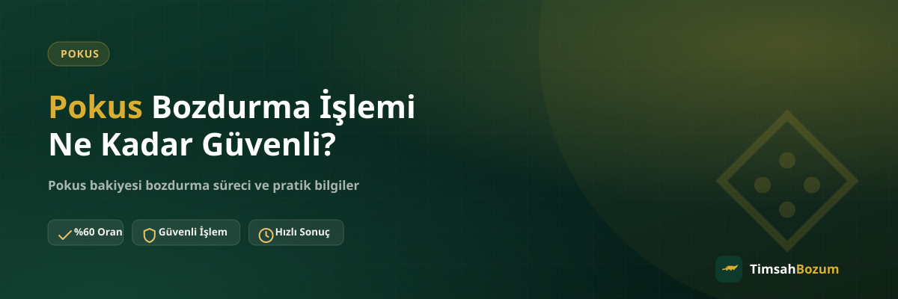

Elinde kullanmadığı bir Pokus bakiyesi olan herkesin aklına ilk gelen soru genelde aynı: bu işlem güvenli mi, bilgimi paylaştıktan sonra ne olacak? Bu yazıda Pokus bozdurma sürecinin hangi adımlardan oluştuğunu, hangi bilgilerin istendiğini ve hangilerinin asla istenmediğini anlatıyoruz ki işleme başlamadan önce net bir fikrin olsun.
Pokus Bozdurma Sürecinde Neler İstenir?
Süreç WhatsApp üzerinden başlar. Resmi hattımıza (+90 543 887 21 71) yazdığında senden istenen tek şey, güncel Pokus bakiyeni gösteren okunaklı bir ekran görüntüsü. Bakiye bilgisi paylaşıldıktan sonra güncel oran teyit edilir, onay verirsen işlem ilerler. Üyelik, form doldurma veya kimlik belgesi gibi bir adım yok; süreç tamamen bu üç aşamadan ibaret.
Hesabıma Erişim Vermem Gerekiyor mu?
Hayır. Pokus bozdurma işlemi için hesabına erişim istenmez, şifre veya giriş bilgisi talep edilmez. İhtiyaç duyulan tek şey bakiyeni gösteren ekran görüntüsü. Bir yerden hesap şifresi veya giriş bilgisi isteyen biri varsa, bu TimsahBozum'un resmi süreciyle ilgisi olmayan bir talep demektir ve bilgi paylaşmadan önce durup numarayı doğrulaman gerekir.
SMS Doğrulama Kodu İstenir mi?
Hiçbir aşamada SMS doğrulama kodu istenmez. Pokus bozdurma süreci; ekran görüntüsü paylaşımı, oran teyidi ve ödeme adımlarından oluşur, bunların hiçbiri telefonuna gelen bir doğrulama kodunu gerektirmez. Böyle bir kod isteyen biriyle karşılaşırsan işlemi durdurup bilgi paylaşmaman, olası bir dolandırıcılık girişimine karşı en basit önlemdir.
Resmi Hattan Yazdığımı Nasıl Anlarım?
TimsahBozum'un tüm işlemleri yalnızca sitede yayınlanan resmi WhatsApp numarası üzerinden yürür. Instagram DM'i, farklı bir telefon numarası veya başka bir uygulama üzerinden "TimsahBozum" adına ulaşıldığını düşünüyorsan, bilgi paylaşmadan önce bu talebi resmi numaradan teyit etmen gerekir. Sitede yayınlanan numara dışında bir kanaldan gelen her teklif, dikkatle karşılanmalı.
Bakiyemin Tamamını mı Bozdurmak Zorundayım?
Hayır. Pokus bakiye tabanlı bir hizmet olduğu için kısmi bozum mümkün. Bakiyenin tamamını bozdurmak zorunda değilsin, istediğin bir kısmını değerlendirip kalanını hesabında tutabilirsin. Bu esneklik, işlemi sana uygun şekilde planlamanı sağlar.
İşlem Ne Zaman Güvensiz Hale Gelir?
Asıl risk, resmi süreç dışına çıkıldığında ortaya çıkar: farklı bir numaraya bilgi paylaşmak, hesap şifresi veya SMS kodu vermek, ya da oranı teyit etmeden aceleyle işlem yapmaya çalışmak. Bu üç davranıştan kaçınıp süreci resmi WhatsApp hattı üzerinden, adım adım ilerlettiğin sürece işlem güvenli şekilde tamamlanır.
Çalışma Saatleri Güvenliği Etkiler mi?
TimsahBozum her gün 10:00 ile 03:00 arası aktif. Bu saatler dışında gönderdiğin bir mesaj kaybolmaz, hat açıldığında sırasıyla yanıtlanır. Gece geç saatte mesaj attıysan hemen yanıt beklememek ve aynı mesajı art arda göndermemek, süreci hızlandırmaz ama bilginin güvenliğini de etkilemez; mesajın sadece sırada bekler. Asıl önemli olan, hangi saatte yazarsan yaz bilgini yalnızca resmi hat üzerinden paylaşman.
İşlem Sonrası Ödeme Nasıl Alınır?
Oranı teyit edip onay verdikten sonra ödeme yöntemi WhatsApp üzerinden görüşülerek belirlenir. Bu adımda da ekstra bir form veya ödeme platformuna yönlendirme yok; her şey aynı konuşma içinde netleşir. İşlem tamamlandıktan sonra konuşma geçmişini ve teyit edilen oranı bir süre saklamak, ileride bir soru çıkması durumunda referans olması açısından faydalı bir alışkanlık.
Üyelik veya Belge Gerekir mi?
Hayır. Pokus bozdurma işlemi için üyelik oluşturmana, bir form doldurmana veya kimlik belgesi göndermene gerek yok. Süreç tamamen WhatsApp üzerinden yürüdüğü için ekstra bir hesap açmak ya da kişisel belge paylaşmak gerekmiyor. Bu, hem işlemi sadeleştiriyor hem de paylaşman gereken bilgi miktarını en aza indiriyor; sadece bakiyeni gösteren ekran görüntüsü yeterli oluyor.
Önceki Kullanıcıların Deneyimleri Ne Gösteriyor?
Bir bozum sitesinin güvenilirliğini değerlendirirken başka kullanıcıların yorumlarına bakmak faydalı bir referans noktası. Google üzerindeki yorumlar, sürecin gerçekte nasıl işlediğine dair fikir verir. Yorumları okurken tek bir olumsuz yoruma takılmak yerine genel eğilime bakmak, hem de yorumun tarihine ve ne kadar detaylı anlatıldığına dikkat etmek daha sağlıklı bir değerlendirme sağlar.
Oranı Teyit Etmeden İşlem Yapmak Neden Riskli?
Sitede yayınlanan oran genel bir referans olduğu için, işlem öncesinde güncel oranı WhatsApp üzerinden teyit etmeden ilerlemek yanlış anlaşılmalara yol açabilir. Oranı teyit etmek bir yükümlülük doğurmaz; güncel oranı öğrendikten sonra işlemden vazgeçmekte de serbestsin. Bu adımı atlamadan ilerlemek, hem senin hem karşı tarafın aynı bilgiye dayanarak hareket etmesini sağlar ve işlemi gereksiz bir gecikmeden korur.
Güncel oranı ve süreci teyit etmek için Pokus bozdurma sayfamızı inceleyebilir ya da doğrudan WhatsApp hattımıza yazabilirsin.
İlgili Yazılar
- Pokus Bozdururken Hesabıma Erişim Veriyor muyum?
- Bozum Yaparken SMS Doğrulama Kodu İsteyen Kişilere Dikkat
- Resmi Bozum Hattını Sahte Hesaplardan Nasıl Ayırt Edersin?
Pokus bozdurma işlemi, resmi WhatsApp hattı üzerinden yürütüldüğü ve hiçbir aşamada hesap erişimi veya SMS kodu talep edilmediği sürece güvenli bir süreçtir. Bakiyeni gösteren ekran görüntüsünü hazırla, oranı teyit et ve işlemini başlat; güncel oranı ve süreci teyit etmek için WhatsApp'tan yazabilirsin.